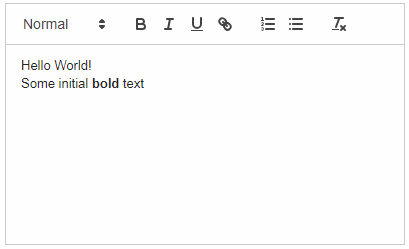

3.5.17.2. 通用 JavaScriptComponent
JavaScriptComponent 是个简å�•çš„ UI 组件，通过它å�¯ä»¥ä½¿ç”¨ä»»ä½•çº¯ JavaScript 组件，并且这个 JavaSctipt 组件ä¸�需è¦�对应的 Vaadin å®�ç�°ã€‚å› æ¤ï¼Œé€šè¿‡è¿™ä¸ªç»„件å�¯ä»¥å¾ˆå®¹æ˜“地在基äº� CUBA 的项目ä¸é›†æˆ�任何纯 JavaScript 组件。
该组件å�¯ä»¥åœ¨ç•Œé�¢çš„ XML æ��è¿°ä¸ä»¥å£°æ˜�çš„æ–¹å¼�å®šä¹‰ï¼Œå› æ¤å�¯ä»¥åœ¨ XML ä¸é…�置动æ€�å±�性和 JavaScript ä¾�赖。
该组件的 XML �称： jsComponent。
- 定义�赖
-
�以为该组件定义一个�赖列表（JavaScript�CSS）。�赖�以�以下���：
-
WebJar 资� - 以
webjar://开头。 -
VAADIN 目录下的文件 - 以
vaadin://开头。 -
Web 资� - 以
http://或https://开头。
如æ�œä¾�èµ–çš„ç±»å�‹ä¸�能ä»�扩展ä¸å¾—知，需è¦�在 XML çš„
typeå±�性ä¸æŒ‡å®šç±»å�‹æˆ–è€…ä¼ é€’DependencyTypeæ�šä¸¾å€¼ç»™addDependency()方法。在 XML ä¸å®šä¹‰ä¾�赖的示例：
<jsComponent ...> <dependencies> <dependency path="webjar://leaflet.js"/> <dependency path="http://code.jquery.com/jquery-3.4.1.min.js"/> <dependency path="http://api.map.baidu.com/getscript?v=2.0" type="JAVASCRIPT"/> </dependencies> </jsComponent>以编程方å¼�æ·»åŠ ä¾�赖的示例：
jsComponent.addDependencies( "webjar://leaflet.js", "http://code.jquery.com/jquery-3.4.1.min.js" ); jsComponent.addDependency( "http://api.map.baidu.com/getscript?v=2.0", DependencyType.JAVASCRIPT ); -
- 定义�始化函数
-
该组件需è¦�一个åˆ�始化函数。æ¤å‡½æ•°çš„å��称用æ�¥æŸ¥æ‰¾ JavaScript 组件è¿�æ�¥å™¨ï¼ˆconnector）的入å�£ï¼ˆè§�下例）。
�始化函数的�称在一个 WEB �览器窗�内必须唯一。
函数�称�以通过
setInitFunctionName()æ–¹æ³•ä¼ é€’ç»™ç»„ä»¶ï¼šjsComponent.setInitFunctionName("com_company_demo_web_screens_Sandbox"); - 定义 JavaScript è¿�æ�¥å™¨ï¼ˆconnector）
-
�使用
JavaScriptComponentæ�¥åŒ…装 JavaScript 库，需è¦�定义 JavaScript è¿�æ�¥å™¨ï¼Œå…¶åŠŸèƒ½ä¸»è¦�是åˆ�始化 JavaScript 组件并且处ç�†æœ�务端和 JavaScript 代ç �之间的通信。è¿�æ�¥å™¨å‡½æ•°ä¸å�¯ä»¥ä½¿ç”¨ä¸‹é�¢çš„方法：
-
this.getElement()è¿”å›�组件的 HTML DOM å…ƒç´ ã€‚ -
this.getState()è¿”å›�ä¸�æœ�务端å�Œæ¥çš„带有当å‰�状æ€�的共享状æ€�对象。
-
- 组件功能
-
JavaScriptComponent组件有下列功能：-
设置一个状æ€�对象，该对象å�¯ä»¥åœ¨å®¢æˆ·ç«¯å±‚çš„ JavaScript è¿�æ�¥å™¨ä¸ä½¿ç”¨ï¼Œå¹¶ä¸”å�¯ä»¥é€šè¿‡ç»„件状æ€�çš„
dataå—段访问，示例：MyState state = new MyState(); state.minValue = 0; state.maxValue = 100; jsComponent.setState(state); -
注册一个函数，该函数å�¯ä»¥åœ¨ JavaScript ä¸ä½¿ç”¨æ��供的å��称进行调用，示例：
jsComponent.addFunction("valueChanged", callbackEvent -> { JsonArray arguments = callbackEvent.getArguments(); notifications.create() .withCaption(StringUtils.join(arguments, ", ")) .show(); });this.valueChanged(values); -
调用命å��的函数，该函数由è¿�æ�¥å™¨çš„ JavaScript 代ç �æ·»åŠ åˆ°åŒ…è£…çš„å¯¹è±¡ä¸ã€‚
jsComponent.callFunction("showNotification ");this.showNotification = function () { alert("TEST"); };
-
- JavaScriptComponent 使用示例
-
本节介ç»�如何在基äº� CUBA 的应用ä¸é›†æˆ�第三方 JavaScript 库，使用 https://quilljs.com/ çš„ Quill 富文本编辑器作为例å�。请按照下é�¢çš„æ¥éª¤é›†æˆ�。
-
在 web 模å�—æ·»åŠ ä»¥ä¸‹ä¾�赖：
compile('org.webjars.npm:quill:1.3.6') -
在 web 模�的
web/VAADIN/quill目录内创建quill-connector.js文件。 -
在æ¤æ–‡ä»¶å†…ï¼Œæ·»åŠ è¿�æ�¥å™¨çš„å®�ç�°ï¼š
com_company_demo_web_screens_Sandbox = function () { var connector = this; var element = connector.getElement(); element.innerHTML = "<div id=\"editor\">" + "<p>Hello World!</p>" + "<p>Some initial <strong>bold</strong> text</p>" + "<p><br></p>" + "</div>"; connector.onStateChange = function () { var state = connector.getState(); var data = state.data; var quill = new Quill('#editor', data.options); // Subscribe on textChange event quill.on('text-change', function (delta, oldDelta, source) { if (source === 'user') { connector.valueChanged(quill.getText(), quill.getContents()); } }); } }; -
创建一个界�，包�以下
jsComponent定义：<jsComponent id="quill" initFunctionName="com_company_demo_web_screens_Sandbox" height="200px" width="400"> <dependencies> <dependency path="webjar://quill:dist/quill.js"/> <dependency path="webjar://quill:dist/quill.snow.css"/> <dependency path="vaadin://quill/quill-connector.js"/> </dependencies> </jsComponent> -
æ·»åŠ ä¸‹é�¢çš„ç•Œé�¢æ�§åˆ¶å™¨å®�ç�°ï¼š
@UiController("demo_Sandbox") @UiDescriptor("sandbox.xml") public class Sandbox extends Screen { @Inject private JavaScriptComponent quill; @Inject private Notifications notifications; @Subscribe protected void onInit(InitEvent event) { QuillState state = new QuillState(); state.options = ParamsMap.of("theme", "snow", "placeholder", "Compose an epic..."); quill.setState(state); quill.addFunction("valueChanged", javaScriptCallbackEvent -> { String value = javaScriptCallbackEvent.getArguments().getString(0); notifications.create() .withCaption(value) .withPosition(Notifications.Position.BOTTOM_RIGHT) .show(); }); } class QuillState { public Map<String, Object> options; } }
执行结æ�œï¼Œç•Œé�¢ä¸å�¯ä»¥çœ‹åˆ° Quill 富文本编辑器：
å�¦ä¸€ä¸ªé›†æˆ�自定义 JavaScript 组件的例å�å�¯ä»¥å�‚阅 使用 JavaScript 库。
-